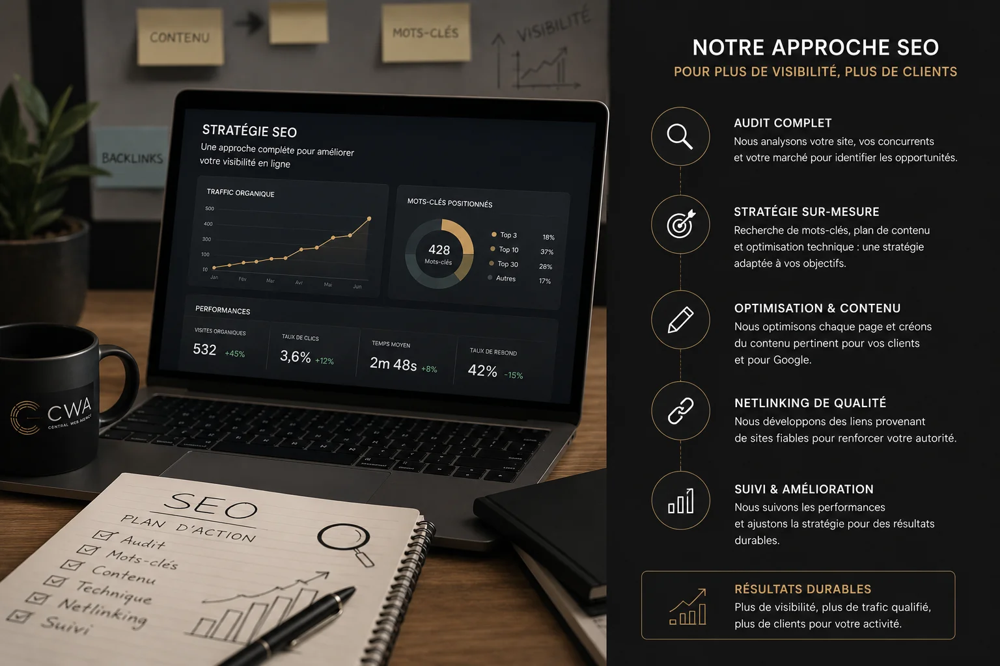

Par Central Web Agency · Mis à jour le

Le SEO local aide les clients à découvrir une activité dans une zone précise. Google explique que le classement local repose principalement sur la pertinence, la distance et la notoriété. Une fiche d’établissement fidèle, un site clair et des avis authentiques aident chacun à répondre à une partie du besoin.
Comment Google classe les résultats locaux
- Pertinence. L’activité décrite correspond-elle à la recherche ? Renseignez précisément vos services et la catégorie de la fiche.
- Distance. Google prend en compte la distance entre le résultat et la zone liée à la recherche. Indiquez votre adresse ou votre zone réelle selon votre situation.
- Notoriété. Google tient compte de ce qu’il connaît de l’établissement, notamment des liens vers celui-ci et du nombre et de la note des avis.
Les résultats de la carte et les pages web dans les résultats classiques sont deux surfaces distinctes. Leur présentation varie selon la recherche. Les conseils de Google sur le classement local détaillent ces facteurs.
Que mettre sur votre site ?
Publiez des pages faciles à consulter en mobile, avec un titre descriptif, les services proposés et les informations pratiques. La zone doit correspondre à vos déplacements ou à votre lieu d’accueil. Une série de pages presque identiques avec des noms de villes différents apporte peu au lecteur.
Exemple illustratif. Un cabinet de bien-être à Heyrieux indique l’adresse du lieu d’accueil, les modalités de rendez-vous et les informations d’accès. Un praticien qui se déplace décrit plutôt les communes réellement couvertes. La fiche site pour praticien du bien-être présente des exemples de contenus pour ce type de projet.
Pour les premières vérifications de contenu, de titres et d’indexation, consultez les bases du référencement naturel.
Que renseigner dans Google Business Profile ?
Si votre activité est éligible, vérifiez la fiche et saisissez son nom réel, une catégorie adaptée, ses coordonnées et ses horaires. Ajoutez des photos représentatives et une adresse ou une zone desservie selon votre situation. Notre guide de configuration de Google Business Profile détaille les étapes.
Comment demander des avis ?
Invitez les clients à partager une expérience réelle, sans récompense, et répondez aux retours de façon professionnelle. La note seule ne permet pas de prévoir votre position. Google interdit les avis achetés ou incités et la sollicitation sélective d’avis positifs. Consultez les règles de Google Maps sur les avis.
Quels liens locaux valent la peine ?
Une association professionnelle, un organisateur d’événement ou un média peut citer une page lorsque celle-ci renseigne son public. Choisissez vos démarches selon la pertinence pour le lecteur. Le guide des backlinks présente des exemples et explique les pratiques à éviter.
Que peut-on vérifier après la mise en ligne ?
Dans Search Console, comparez les requêtes et les pages qui reçoivent des impressions et des clics. Notez la période, la page et le contexte avant de conclure. Une mise à jour d’horaires ou un article utile mérite d’être publié pour les clients, sans garantie de position.
Chez CWA, le SEO est intégré dès la conception : structure des pages, titres et descriptions, liens, canonical, données structurées adaptées et contrôle du chargement. Consultez nos services de création et de référencement pour connaître le périmètre de l’accompagnement à Heyrieux, près de Lyon, et au-delà.